P37 实际父子组件 · 问题核对
旧UI实际运行样例，不是新C稿；分页归属与复制局部修复；两类查询历史问题仍待处理，整页验收不通过。截图不含地址栏，URL与字段差异见证据。
完整证据
initial-loading · 390px first-500 · 390px
first-403 · 390px
first-500 · 390px
first-403 · 390px first-401 · 390px
first-401 · 390px first-409 · 390px
first-409 · 390px first-429 · 390px
first-429 · 390px first-503 · 390px
first-503 · 390px empty-response · 390px
empty-response · 390px background-500 · 390px
background-500 · 390px background-403 · 390px
background-403 · 390px background-401 · 390px
background-401 · 390px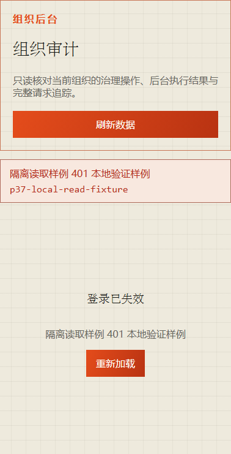
history-url-fields-mismatch · 390px
normal-page · 390px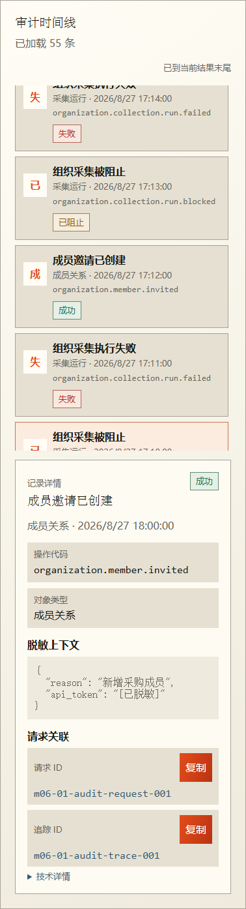
page-200-refresh-200-new-first · 390px
page-200-refresh-200-old-first · 390px page-403-refresh-200-new-first · 390px
page-403-refresh-200-new-first · 390px page-500-refresh-200-new-first · 390px
page-500-refresh-200-new-first · 390px page-200-refresh-500-new-first · 390px
page-200-refresh-500-new-first · 390px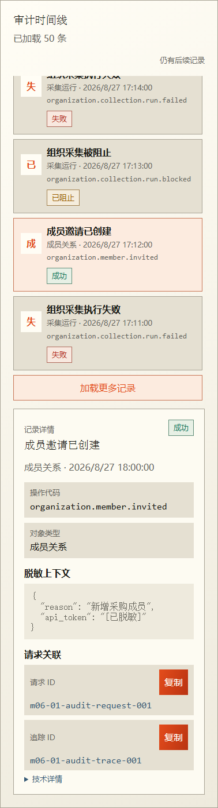
page-200-refresh-403-new-first · 390px late-copy-ignored · 390px
late-copy-ignored · 390px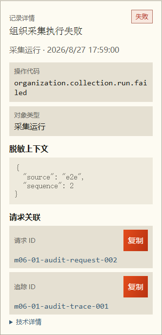
initial-loading · 1440px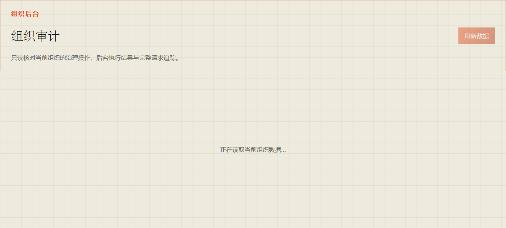
first-500 · 1440px first-403 · 1440px
first-403 · 1440px first-401 · 1440px
first-401 · 1440px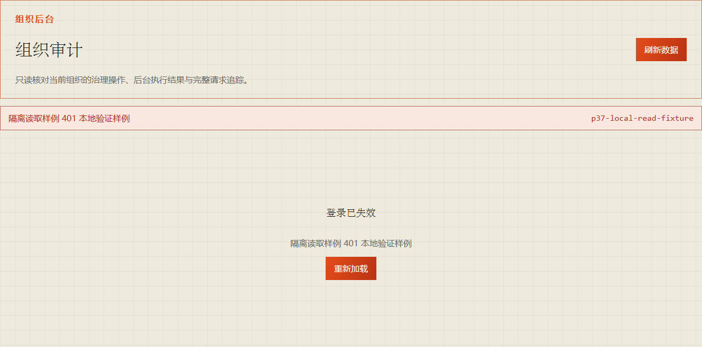
first-409 · 1440px first-429 · 1440px
first-429 · 1440px first-503 · 1440px
first-503 · 1440px empty-response · 1440px
background-500 · 1440px
empty-response · 1440px
background-500 · 1440px background-403 · 1440px
background-403 · 1440px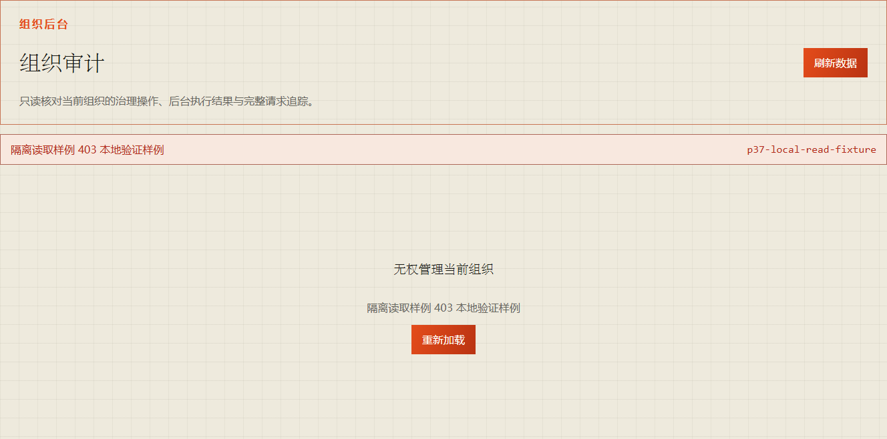
background-401 · 1440px history-url-fields-mismatch · 1440px
history-url-fields-mismatch · 1440px normal-page · 1440px
normal-page · 1440px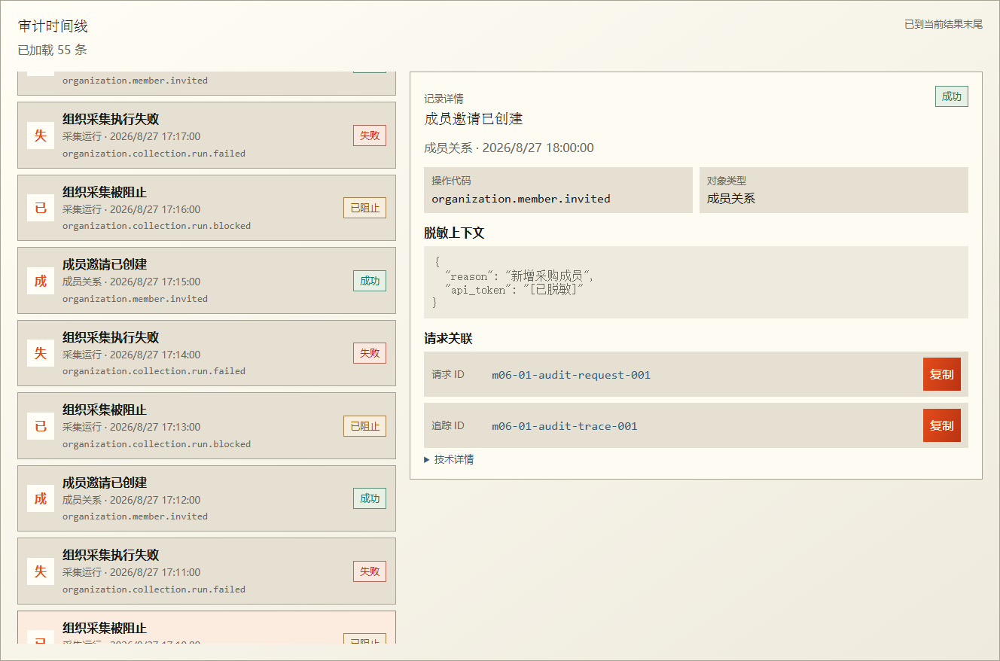
page-200-refresh-200-new-first · 1440px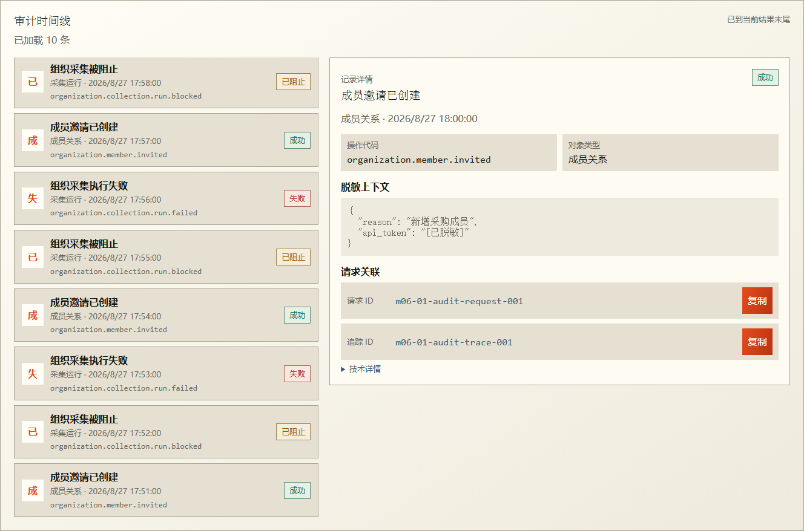
page-200-refresh-200-old-first · 1440px page-403-refresh-200-new-first · 1440px
page-403-refresh-200-new-first · 1440px page-500-refresh-200-new-first · 1440px
page-500-refresh-200-new-first · 1440px page-200-refresh-500-new-first · 1440px
page-200-refresh-500-new-first · 1440px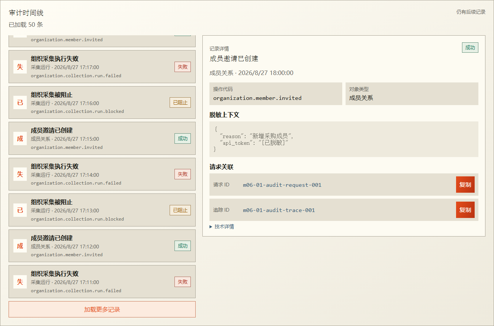
page-200-refresh-403-new-first · 1440px late-copy-ignored · 1440px
late-copy-ignored · 1440px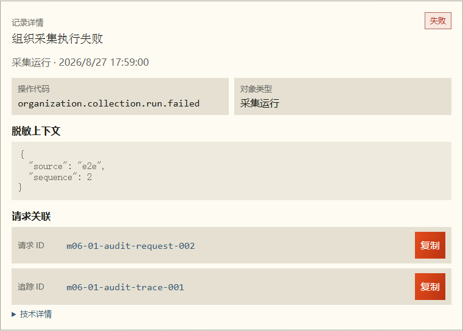